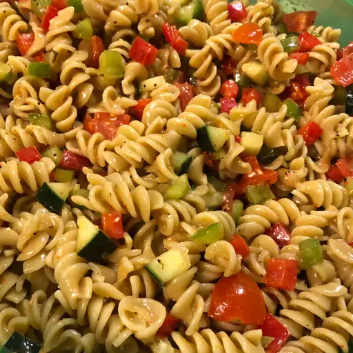

Pasta Salad

Description
This pasta salad recipe was given to me by a
dear friend many years ago, and
I've been making it ever since! It's great for barbecues.
This easy pasta salad recipe comes together quickly
with convenient ingredients and colorful vegetables.
Ingredients
- 1 pound tri-colored spiral pasta
- 1 bottle italian-style salad dressing
- 6 tablespoons salad seasoning mix
- 2 cups cherry tomatoes, diced
- 1 green bell pepper, chopped
- 1 red bell pepper, diced
- 1 yellow bell pepper, diced
- 1 can black olives, chopped
Steps
-
Bring a large pot of lightly salted water to a boil.
Cook pasta in the boiling water,
stirring occasionally, until tender yet firm to the bite,
about 10 to 12 minutes; rinse under cold water and drain.
-
Whisk Italian dressing and salad spice mix together until smooth.
Combine pasta, tomatoes, bell peppers, and olives in a salad bowl.
- Pour dressing over salad and toss to coat.
- Refrigerate salad, 8 hours to overnight.
- Enjoy!